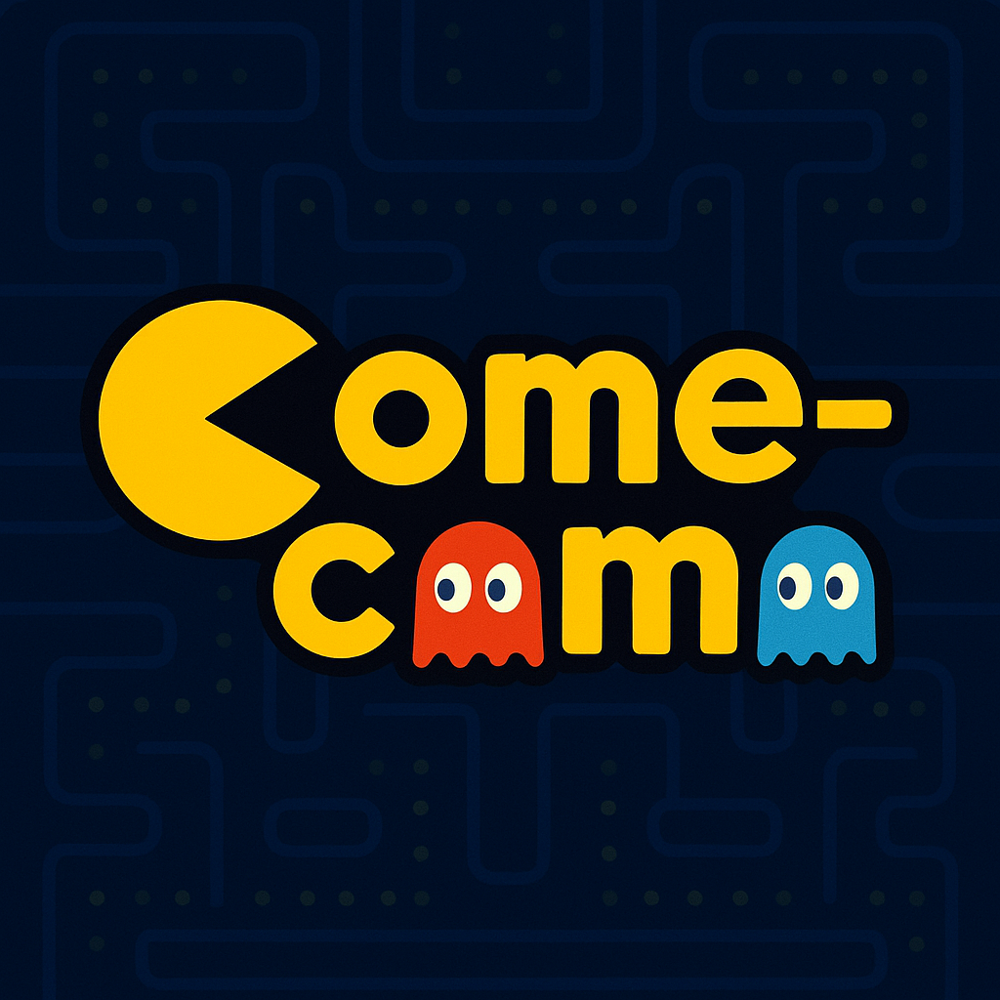

Restaurante Come-come
O Come-Come é um restaurante temático que une a nostalgia dos clássicos
arcades com uma experiência gastronômica única. Inspirado no universo do
Pac-Man, nosso estabelecimento oferece um ambiente divertido e interativo
onde os clientes se tornam protagonistas de uma aventura culinária. Assim
como Pac-Man devora os pontos em seu labirinto, nossos clientes são
convidados a "devorar" pratos criativos e saborosos em um espaço que
recria a estética pixelizada e colorida do jogo icônico. Com cardápio
inovador, atmosfera retro e referências gaming em cada detalhe, o
Come-Come transforma uma refeição comum em uma jornada lúdica e memorável
para todas as idades.
Diferenciais
-
Jantares Temáticos com "Caça aos Fantasmas": Periodicamente, o
restaurante promove noites especiais onde os clientes, ao fazerem
pedidos de pratos e sobremesas específicas (os "fantasmas"), coletam
pontos em um cardápio especial semelhante ao labirinto do jogo. Ao final
da refeição, quem acumular mais pontos ganha prêmios, como descontos na
conta ou brindes exclusivos, transformando a refeição em uma competição
divertida e interativa.
-
Cardápio "Power Pellet" com Experiências Sensoriais: Inspirado na
"Power Pellet" que deixa o Pac-Man invencível, o restaurante oferece
pratos e drinks especiais da casa que trazem elementos de surpresa. Isso
inclui desde ingredientes que mudam de cor e textura (como
esferificações ou gelo seco para efeito de fumaça) até combinações de
sabores inusitadas que "ativam os sentidos" do cliente, proporcionando
uma experiência gastronômica lúdica e memorável.
-
Ambiente Imersivo com Tecnologia Retro: Além da decoração que recria
o labirinto do jogo com mesas e paredes temáticas, cabines individuais
são equipadas com tablets embutidos que permitem aos clientes jogar uma
versão personalizada do Pac-Man enquanto aguardam o pedido. Os próprios
garçons, vestidos como personagens do jogo, são parte da experiência,
entregando os pratos com frases icônicas e interagindo para criar uma
atmosfera totalmente nostálgica e envolvente.